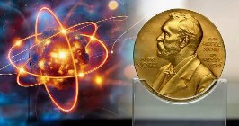
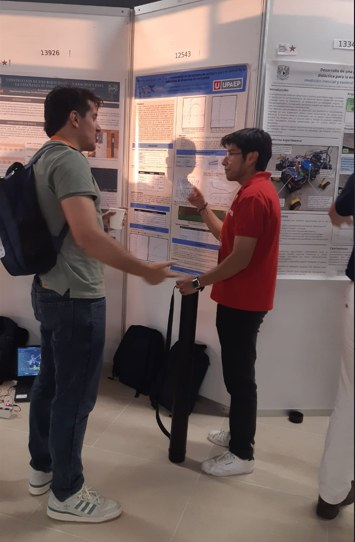
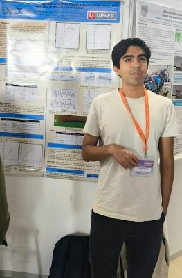

Octubre llevó al Departamento de Ciencias a la conversación pública sobre los Premios Nobel, a dos congresos nacionales y a comunidades de Puebla con talleres para niñas, niños y jóvenes. La columna Espacio con(s)Ciencia sumó cuatro nuevas entregas.
Rueda de prensa · 13 de octubre
Los Premios Nobel y el reto de formar jóvenes científicos en México
En rueda de prensa en UPRESS, el Dr. Pablo Marco Trejo García, coordinador del área de Física y Química, y el Mtro. Mario Enrique López Medina, profesor de Física, explicaron la relevancia de los Premios Nobel en ciencias exactas y la necesidad de fortalecer la investigación científica en México, ante la brecha de investigadores que existe frente a los países desarrollados.

Destacaron también la participación de estudiantes de Ingeniería Aeroespacial en el observatorio HAWC, en la Sierra Negra de Puebla, y la presentación de trabajos sobre simulación de radiación cósmica en el Congreso Nacional de Física.
Estudiantes de Ingeniería Aeroespacial participaron en el observatorio ubicado en la Sierra Negra de Puebla.
El 15 de octubre, el Dr. Damián Emilio Gibaja Romero y el Dr. Pablo Marco Trejo García abordaron el mismo tema en una entrevista para Diálogos MX, donde hablaron de la importancia de la ciencia y del interés de los jóvenes por desarrollarla.
Divulgación científica
Espacio con(s)Ciencia: las columnas de octubre
Durante octubre, profesores del Departamento publicaron cuatro nuevas entregas de la columna Espacio con(s)Ciencia en UPRESS.
Matiza el alcance de la solución a Navier-Stokes obtenida con inteligencia artificial y recuerda que corresponde a la curiosidad humana orientar la IA hacia el bien común.
Explica cómo el biomimetismo y la física de la materia granular, a partir del lagarto de arena, inspiran el diseño de rovers de exploración espacial y robots de búsqueda y rescate.
Presenta el Premio Nobel de Química 2026, otorgado por aportaciones a la síntesis orgánica asimétrica, y su relevancia para la industria farmacéutica.
Conmemora el Día de la Estadística y reflexiona sobre el papel de los datos en la toma de decisiones.
Congreso Nacional de Física 2026 · Ensenada, B. C.
Estudiantes UPAEP presentan investigación aeroespacial
Bajo la asesoría de la Dra. Izbeth Hernández López y el Dr. Pablo Marco Trejo García, los estudiantes Luis Roberto González García y Emilio Munguía Flores presentaron dos trabajos en modalidad de póster:
Desarrollado en colaboración con el Dr. Ibrahim Torres, del INAOE.


Investigación multidisciplinaria
Ciencias en el XXX Congreso de Odontología
En el XXXIV Encuentro Nacional y XXV Iberoamericano de Investigación en Odontología, en el marco del XXX Congreso de Odontología, el Departamento de Ciencias tuvo una participación que muestra su vocación transversal.
Dra. Zaida Nelly Juárez.
Dr. Pablo Marco Trejo García, en colaboración con la estudiante Karen Denisse Licona Gutiérrez y el Dr. Alejandro Andrade Torres.
Ciencia para niñas, niños y jóvenes
La ciencia sale del aula: talleres y actividades de divulgación
- 1Octubre«Conoce tu grupo sanguíneo»
La Dra. Flora Leticia López Pérez impartió este taller a estudiantes de preparatoria.
- 3Octubre«Jugando con la luz»
El Mtro. Mario Enrique López Medina llevó esta actividad a niñas y niños de 6 a 11 años de San Antonio Cacalotepec, con la asistencia de 15 niños y 3 adultos.
- 24Octubre«Cristales / Pandilla galáctica»
La Dra. Izbeth Hernández López compartió esta actividad con niñas y niños de San Bernardino Tlaxcalancingo.
Próximamente
Agenda de noviembre
- 4NoviembreEspacio con(s)Ciencia
«Trampas de arena y física de avalanchas» · Dra. Yesica Yazmín Escobar Ortega
- 7NoviembreDivulgación infantil
San Antonio Cacalotepec
- 12NoviembreEspacio con(s)Ciencia
Estadística: relación y comunicación entre Estadística y Matemáticas
- 28Noviembre«Física viva: fluidos, granos y bichos»
Consejo Puebla de Lectura · Dra. Yesica Yazmín Escobar Ortega